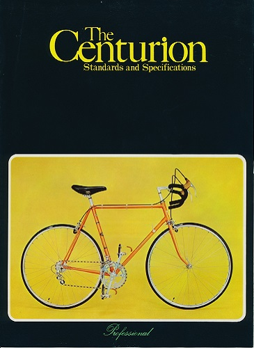

Centurion Catalogs are very rare in this day and age and we need to do what we can to make sure that these files stay alive and available for years to come. Although I did not scan all of these catalogs in, As these catalogs are hard to come by. I have noted where the catalog was retrieved from if it was not one owned by vintage-centurion. They are posted for prosperity sake.and for sake of completeness.
If anyone has any of these catalogs either in print or digital fromat please email me i am actively looking for more catalogs to post.
| Year | Link | Source |
|---|---|---|
| 1974 |  |
Vintage-Centurion.com |
| 1978 |  | Tim Fricker (User:tymncycle) |
| 1979 | Velobase | |
| 1983 |
|
Bikeforums Member: rgvg |
| 1984 | Sheldon Browns Website Converted to PDF | |
| 1985 | Vintage-Centurion.com | |
| 1986 | Vintage-Centurion.com | |
| 1987 |
|
Vintage-Centurion.com (New higher resolution scan) |
2020 Vintage-Centurion.com